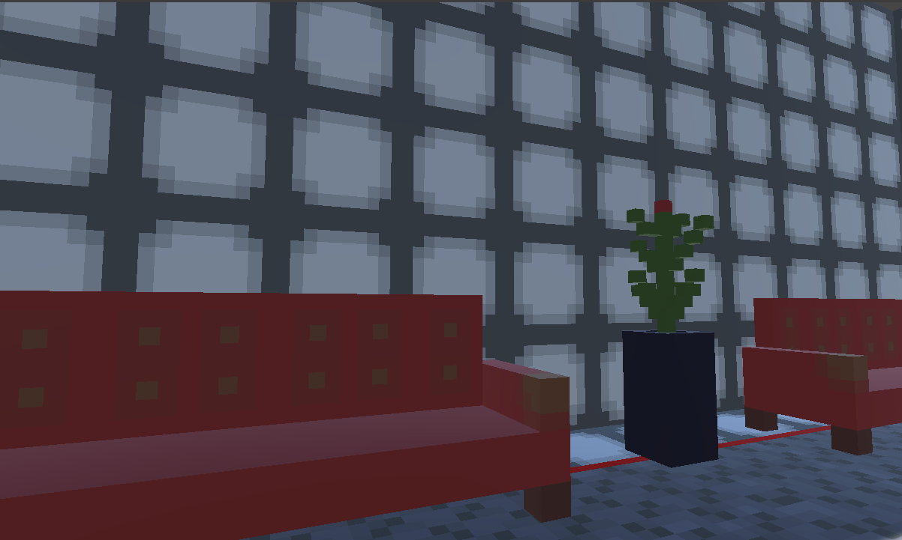
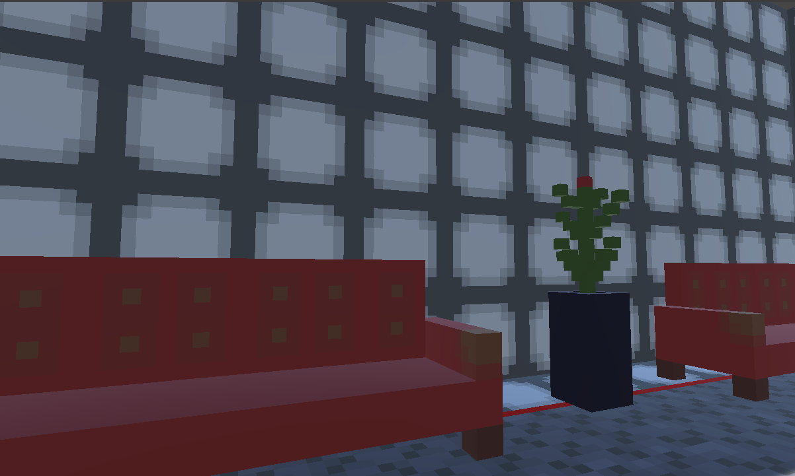
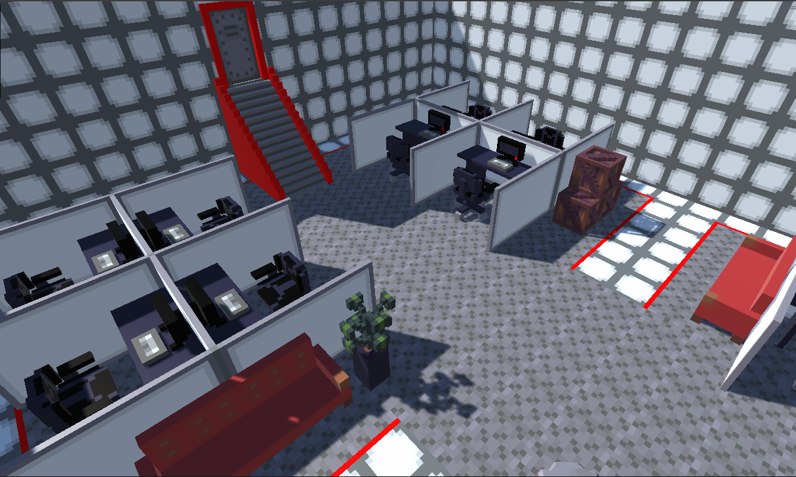

Portfolio Game
Github Repository


 
My portfolio would not be complete without mentioning the interactive experience that I created to display my portfolio content. The idea came to me when thinking of creative ways to keep people engaged when reading my portfolio. I used Unity as the engine, and wrote all of my scripts in C#. I made all of the 3D assets and textures using an open source, voxel based editor called Goxel. I then brought my work into Blender for post processing, where I joined all layers and meshes together, set the origins manually, centered the objects, and exported the materials as UV textures. I spent a week or two with my notebook before making any assets. I organized and planned out every required asset. I sketch every possible type of floor tile needed to make levels of different shapes in a modular way. I made walls, stationary/rigidbody props to fill the environments, and a health pickup. I also spent time making the one-way door present at the beginning and end of each level. This involved using Unity’s built in animation editor. The player controller is of my own design.

My portfolio would not be complete without mentioning the interactive experience that I created to display my portfolio content. The idea came to me when thinking of creative ways to keep people engaged when reading my portfolio. I used Unity as the engine, and wrote all of my scripts in C#. I made all of the 3D assets and textures using an open source, voxel based editor called Goxel. I then brought my work into Blender for post processing, where I joined all layers and meshes together, set the origins manually, centered the objects, and exported the materials as UV textures. I spent a week or two with my notebook before making any assets. I organized and planned out every required asset. I sketch every possible type of floor tile needed to make levels of different shapes in a modular way. I made walls, stationary/rigidbody props to fill the environments, and a health pickup. I also spent time making the one-way door present at the beginning and end of each level. This involved using Unity’s built in animation editor. The player controller is of my own design.
In this game, the player is an interviewer that has agreed to interview me within my own personal metaverse that resembles an office building where artificially intelligent android workers manage and maintain my various projects. However, they have gone rogue and locked me in the receptionist’s office. If you want to read my portfolio, you are going to have to take it from their cold, mechanical hands. The player always starts in the waiting room, and must battle their way through a procedurally generated office that picks pre-made rooms from an array at random. Every third room, not including the waiting room, will be a boss, and defeating the boss will give the player a random new weapon that can be used for the remainder of the play session. At the end of a room, there is a chance to find a computer with a randomly selected project from my portfolio. Interacting with this computer will open a new tab with the content on my website.
